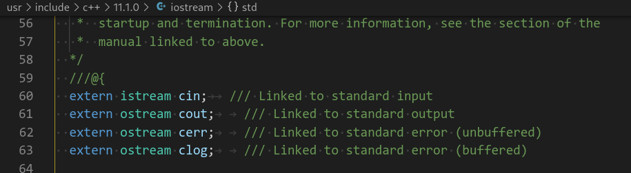

诚如是，Life is too short to learn c++. 此篇记录一些我在学习cpp过程中遇到的一些知识点，仅作记录并梳理之效。里面可能会有大量参考其他网络博客，如有侵权，请联系我删除之。
c++之父的 glossary: Bjarne Stroustrup’s C++ Glossary, 里面有c++名词的简短解释，以c++之父的角度哦。
Reactor v.s. Proactor
- epll/wait: reactor模式，不停轮询，发现有事做，就做！
- asio: proactor模式，先注册好事件，如果事情发生了，通过回调函数处理。
几个常用的宏
__func__: name of an function, exists in C99/C++11 (__FUNCTION__is non standard)__LINE__: line number of the code__FILE__: filename of the file__DATE__and__TIME__: as you wish
不要在ctor里调用虚函数
总结来说：基类部分在派生类部分之前被构造，当基类构造函数执行时派生类中的数据成员还没被初始化。如果基类构造函数中的虚函数调用被解析成调用派生类的虚函数，而派生类的虚函数中又访问到未初始化的派生类数据，将导致程序出现一些未定义行为和bug。
ctor应该设计的尽量简单，确保对象可以被正确构造。在ctor中调用本类的非静态成员都是不安全的，因为他们还没被构造，而有些成员是依赖对象的，而此时对象还没有被成功构造。
ctor不能是虚函数
-
从存储空间角度：虚函数对应一个vtable（虚函数表），这大家都知道，可是这个vtable其实是存储在对象的内存空间的。问题出来了，如果构造函数是虚的，就需要通过 vtable来调用，可是对象还没有实例化，也就是内存空间还没有，无法找到vtable，所以构造函数不能是虚函数。
-
从使用角度：虚函数主要用于在信息不全的情况下，能使重载的函数得到对应的调用。构造函数本身就是要初始化实例，那使用虚函数也没有实际意义呀。所以构造函数没有必要是虚函数。
虚函数的作用在于通过父类的指针或者引用来调用它的时候能够变成调用子类的那个成员函数。而构造函数是在创建对象时自动调用的，不可能通过父类的指针或者引用去调用，因此也就规定构造函数不能是虚函数。
- 构造函数不需要是虚函数，也不允许是虚函数，因为创建一个对象时我们总是要明确指定对象的类型，尽管我们可能通过实验室的基类的指针或引用去访问它。但析构却不一定，我们往往通过基类的指针来销毁对象。这时候如果析构函数不是虚函数，就不能正确识别对象类型从而不能正确调用析构函数。
—————————————————— 版权声明：本文为CSDN博主「cainiao000001」的原创文章，遵循CC 4.0 by-sa版权协议，转载请附上原文出处链接及本声明。 原文链接：https://blog.csdn.net/cainiao000001/article/details/81603782
虚函数的工作原理
https://zhuanlan.zhihu.com/p/60543586
C++ 规定了虚函数的行为，但将实现方法留给了编译器的作者。不需要知道实现方法也可以很好的使用虚函数，但了解虚函数的工作原理有助于更好地理解概念。
通常，编译器处理虚函数的方法是：给每个对象添加一个隐藏成员。隐藏成员中保存了一个指向函数地址数组的指针。
这种数组称为虚函数表（Virtual Function Table, vtbl）。
虚函数表是一个数组，数组的元素是指针，指针指的是虚函数的地址。
具有虚函数的类的实例，都会在头部存一个指向虚函数表的指针。
常见类型所占空间大小
| TYPE | Bytes |
|---|---|
| (unsigned) int | 4 |
| (unsigned) short | 2 |
| (unsigned) long | 8 |
| float | 4 |
| double | 8 |
| long double | 16 |
| (unsigned) char | 1 |
| bool | 1 |
指针占几个字节 指针即为地址，指针几个字节跟语言无关，而是跟系统的寻址能力有关，譬如以前是16为地址，指针即为2个字节，现在一般是32位系统，所以是4个字节，以后64位，则就为8个字节。
NOTE: 类成员函数指针一般为普通指针的两倍大小。
literal 5.0类型为double，5.0f类型为float。不加f后缀默认double.
静态成员的初始化
当一个类包含静态成员时，最好的做法是在类中声明，在类外初始化。由于静态成员是所有对象共享的，如果在类内初始化，则每个对象构造时，都要执行一遍静态成员的初始化，这无疑是一种浪费。
struct A
{
static int a;
int b;
void fun();
...
};
int A::a = 233;
class B
{
public:
void fun();
...
private:
static string str_;
bool done_;
};
string B::str_ = "hello, i am static";析构函数的调用时机
The destructor is called whenever an object’s lifetime ends, which includes
- program termination, for objects with static storage duration
- thread exit, for objects with thread-local storage duration
- end of scope, for objects with automatic storage duration and for temporaries whose life was extended by binding to reference
- delete-expressin, for objects with dynamic storage duration
- end of the full expression, for nameless temporaries
- stack unwinding (栈回溯), for objects with automatic storage duration when an exception escapes their block, uncaught.
cf. https://en.cppreference.com/w/cpp/language/destructor
常量
Literal constants
字面值常量 Cf. https://www.learncpp.com/cpp-tutorial/literals/
Symbolic constants
符号常量 Cf. https://www.learncpp.com/cpp-tutorial/const-constexpr-and-symbolic-constants/
- Const variables must be initialized
- Function parameters for arguments passed by value should not be made const.
- Don’t use const with return by value.
Runtime vs compile-time constants
Runtime constants are constants whose initialization values can only be resolved at runtime (when your program is running). The following are examples of runtime constants:
#include <iostream>
void printInt(const int x) // x is a runtime constant because the value isn't known until the program is run
{
std::cout << x;
}
int main()
{
std::cout << "Enter your age: ";
int age{};
std::cin >> age;
const int usersAge { age }; // usersAge is a runtime constant because the value isn't known until the program is run
std::cout << "Your age is: ";
printInt(age);
return 0;
}Compile-time constants are constants whose initialization values can be determined at compile-time (when your program is compiling). The following are examples of compile-time constants:
const double gravity { 9.8 }; // the compiler knows at compile-time that gravity will have value 9.8
const int something { 1 + 2 }; // the compiler can resolve this at compiler timeCompile-time constants enable the compiler to perform optimizations that aren’t available with runtime constants. For example, whenever gravity is used, the compiler can simply substitute the identifier gravity with the literal double 9.8.
To help provide more specificity, C++11 introduced the keyword constexpr, which ensures that a constant must be a compile-time constant.
Any variable that should not be modifiable after initialization and whose initializer is known at compile-time should be declared as
constexpr.Any variable that should not be modifiable after initialization and whose initializer is not known at compile-time should be declared as
const.
Note that literals are also implicitly constexpr, as the value of a literal is known at compile-time.
A constant expression is an expression that can be evaluated at compile-time. For example:
#include <iostream>
int main()
{
std::cout << 3 + 4; // 3 + 4 evaluated at compile-time
return 0;
}In the above program, because the literal values 3 and 4 are known at compile-time, the compiler can evaluate the expression 3 + 4 at compile-time and substitute in the resulting value 7. That makes the code faster because 3 + 4 no longer has to be calculated at runtime.
Constexpr variables can also be used in constant expressions:
#include <iostream>
int main()
{
constexpr int x { 3 };
constexpr int y { 4 };
std::cout << x + y; // x + y evaluated at compile-time
return 0;
}In the above example, because x and y are constexpr, the expression x + y is a constant expression that can be evaluated at compile-time. Similar to the literal case, the compiler can substitute in the value 7.
Object-like preprocessor macros v.s. symbolic constants
Object-like macro has the form:
#define identifier substitution_textWhenever the preprocessor encounters this directive, any further occurrence of identifier is replaced by substitution_text. The identifier is traditionally typed in all capital letters, using underscores to represent spaces.
Avoid using define to create symbolic constants macros. Use const or constexpr variables instead.
Macros can have naming conflicts with normal code. For example:
#include "someheader.h"
#include <iostream>
int main()
{
int beta { 5 };
std::cout << beta;
return 0;
}If someheader.h happened to define a macro named beta, this simple program would break, as the preprocessor would replace the int variable beta’s name with whatever the macro’s value was. This is normally avoided by using all caps for macro names, but it can still happen.
Using symbolic constants throughout a multi-file program
预编译
Cf. https://www.learncpp.com/cpp-tutorial/introduction-to-the-preprocessor/
#include
When you include a file, the preprocessor replaces the include directive with the contents of the included file. The included contents are then preprocessed (along with the rest of the file), and then compiled.
Macro defines
The define directive can be used to create a macro. In C++, a macro is a rule that defines how input text is converted into replacement output text.
There are two basic types of macros: object-like macros, and function-like macros. Object-like macros can be defined in one of two ways:
#define identifier
#define identifier substitution_textObject-like macros don’t affect other preprocessor directives
结论：宏展开在预编译指令(Preprocessor directives)无效。
#define PRINT_JOE
#ifdef PRINT_JOE // 此处会否将'PRINT_JOE'替换为空呢？
// ...Macros only cause text substitution for normal code. Other preprocessor commands are ignored. Consequently, the PRINT_JOE in #ifdef PRINT_JOE is left alone.
For example:
#define FOO 9 // Here's a macro substitution
#ifdef FOO // This FOO does not get replaced because it’s part of another preprocessor directive
std::cout << FOO; // This FOO gets replaced with 9 because it's part of the normal code
#endifIn actuality, the output of the preprocessor contains no directives at all — they are all resolved/stripped out before compilation, because the compiler wouldn’t know what to do with them.
The scope of defines
Once the preprocessor has finished, all defined identifiers from that file are discarded. This means that directives are only valid from the point of definition to the end of the file in which they are defined. Directives defined in one code file do not have impact on other code files in the same project.
宏定义仅在本文件有效，一旦预编译阶段结束，所有宏都将失效。因为，预编译就是将所有的预编译指令都处理掉，该替换的替换（宏展开），该选择的选择，该丢弃的丢弃（条件编译），然后交给编译器去编译，谨记：编译器是读不懂预编译指令的！
Consider the following example:
function.cpp:
#include <iostream>
void doSomething()
{
#ifdef PRINT
std::cout << "Printing!";
#endif
#ifndef PRINT
std::cout << "Not printing!";
#endif
}main.cpp:
void doSomething(); // forward declaration for function doSomething()
#define PRINT
int main()
{
doSomething();
return 0;
}The above program will print:
Not printing!
Even though PRINT was defined in main.cpp, that doesn’t have any impact on any of the code in function.cpp (PRINT is only defined from the point of definition to the end of main.cpp). This will be of consequence when we discuss header guards in a future lesson.
Header files
Cf. https://www.learncpp.com/cpp-tutorial/header-files/
对于多文件项目，文件是单独编译的。要想调用一个自定义函数，linker必须能找到这个函数在哪里定义。
int add(int, int); // forward declaration
int main()
{
// add(3, 5);
return 0;
}上述文件是可以编译通过的，因为没有发生对add的调用，所以linker不会去找add的定义（当然如果要找也找不到）。
但是如果某处发起了对add的调用（例如去掉注释），那么上述程序在link阶段会报错：
yychi@~> clang test_linker.cpp
/usr/bin/ld: /tmp/test_linker-e1bb8b.o: in function `main':
test_linker.cpp:(.text+0x1a): undefined reference to `add(int, int)'
clang-13: error: linker command failed with exit code 1 (use -v to see invocation)在多文件编程时，往往需要forawrd declaration，这些前置声明必须在其他某个地方被定义且只被定义一次。这样，linker才能正确的完成链接。任何重复定义或未定义都会在link阶段报错。
考虑如下例子：
add.cpp:
int add(int x, int y)
{
return x + y;
}main.cpp:
#include <stdio.h>
int add(int, int);
int main()
{
int x = 1, y = 2;
int z = add(x, y);
printf("z=%d\n", z);
return 0;
}在编译main.cpp的时候，因为有add的前置声明，所以可以通过。但为了link的时候能够找到add的定义，add.cpp必须也被编译，所以正确的编译方式应该是：
$ clang main.cpp add.cppUse of header files
从上面的论述我们隐约可见，在多文件编程中，我们可能会大量的使用前置声明（forward declaration），一旦文件多起来，这将非常枯燥。所以头文件的出现就是为了解决这个问题：把所有的声明放在一起。
Let’s write a header file to relieve us of this burden. Writing a header file is surprisingly easy, as header files only consist of two parts:
- A header guard.
- The actual content of the header file, which should be the forward declarations for all of the identifiers we want other files to be able to see.
add.h:
// 1) We really should have a header guard here, but will omit it for simplicity (we'll cover header guards in the next lesson)
// 2) This is the content of the .h file, which is where the declarations go
int add(int x, int y); // function prototype for add.h -- don't forget the semicolon!main.cpp:
#include "add.h" // Insert contents of add.h at this point. Note use of double quotes here.
#include <iostream>
int main()
{
std::cout << "The sum of 3 and 4 is " << add(3, 4) << '\n';
return 0;
}add.cpp:
#include "add.h" // Insert contents of add.h at this point. Note use of double quotes here.
int add(int x, int y)
{
return x + y;
}When the preprocessor processes the #include "add.h" line, it copies the contents of add.h into the current file at that point. Because our add.h contains a forward declaration for function add, that forward declaration will be copied into main.cpp. The end result is a program that is functionally the same as the one where we manually added the forward declaration at the top of main.cpp.
Consequently, our program will compile and link correctly.

Two wrong cases

如上图所示，会产生一个重复定义的错误。由于add.h中包含了函数定义，而非前置声明。编译main.cpp的时候，add.h中的代码插入到main.cpp中，产生一次add函数的定义。同理，编译add.cpp的时候也定义了一次add函数。link阶段会发生歧义，以致报错。
此时如果不编译add.cpp其实是可行的：

但谁又能保证只有一个文件#include "add.h"呢？所以头文件中应该只包含声明，而不应该包含实现。
The primary purpose of a header file is to propagate declarations to code files.
Key insight: Header files allow us to put declarations in one location and then import them wherever we need them. This can save a lot of typing in multi-file programs.
Header files should generally not contain function and variable definitions, so as not to violate the one definition rule. An exception is made for symbolic constants (which we cover in lesson 4.15 — Symbolic constants: const and constexpr variables).
标准库自动链接
注意：clang 不会自动链接，需要手动链接
clang main.cpp -lstdc++
更新：clang++ 等于 clang -lstdc++，类似的，g++ 等于 gcc -lstdc++.
When it comes to functions and variables, it’s worth keeping in mind that header files typically only contain function and variable declarations, not function and variable definitions (otherwise a violation of the one definition rule could result). std::cout is forward declared in the iostream header, but defined as part of the C++ standard library, which is automatically linked into your program during the linker phase.

The include order of header files
Cf. https://www.learncpp.com/cpp-tutorial/header-files/ for “the inclue order of header files”.
A view of memory and fundamental data types in cpp
Cf. https://www.learncpp.com/cpp-tutorial/introduction-to-fundamental-data-types/
The smallest unit of memory is a binary digit (also called a bit), which can hold a value of 0 or 1. You can think of a bit as being like a traditional light switch — either the light is off (0), or it is on (1). There is no in-between. If you were to look at a random segment of memory, all you would see is …011010100101010… or some combination thereof.
Memory is organized into sequential units called memory addresses (or addresses for short). Similar to how a street address can be used to find a given house on a street, the memory address allows us to find and access the contents of memory at a particular location.
Perhaps surprisingly, in modern computer architectures, each bit does not get its own unique memory address. This is because the number of memory addresses are limited, and the need to access data bit-by-bit is rare. Instead, each memory address holds 1 byte of data. A byte is a group of bits that are operated on as a unit. The modern standard is that a byte is comprised of 8 sequential bits.
Data types
Because all data on a computer is just a sequence of bits, we use a data type (often called a “type” for short) to tell the compiler how to interpret the contents of memory in some meaningful way. You have already seen one example of a data type: the integer. When we declare a variable as an integer, we are telling the compiler “the piece of memory that this variable uses is going to be interpreted as an integer value”.
When you give an object a value, the compiler and CPU take care of encoding your value into the appropriate sequence of bits for that data type, which are then stored in memory (remember: memory can only store bits). For example, if you assign an integer object the value 65, that value is converted to the sequence of bits 0100 0001 and stored in the memory assigned to the object.
Conversely, when the object is evaluated to produce a value, that sequence of bits is reconstituted back into the original value. Meaning that 0100 0001 is converted back into the value 65.
Fortunately, the compiler and CPU do all the hard work here, so you generally don’t need to worry about how values get converted into bit sequences and back.
All you need to do is pick a data type for your object that best matches your desired use.
谨记：内存只能存bit，只能寻址寻到byte这一层，如果数据按内存边界对齐，寻址会更快（一次读）。
示例：
int* p = nullptr;
printf("p=%p\n", p); // p=(nil)
printf("p+1=%p\n", p+1); // p+1=0x4
printf("rp+1=%p\n", reinterpret_cast<char*>(p) + 1); // rp+1=0x1由于内存地址空间有限，且按bit寻址的场景很少，所以寻址单位一般是byte。A byte is a group of bits that are operated on as a unit. The modern standard is that a byte is comprised of 8 sequential bits.
移位
#include <cstdint>
#include <iostream>
using namespace std;
static void print(int32_t a, uint32_t b, size_t n_shift)
{
cout << "a=" << a << "; b=" << b << endl;
cout << "left shift " << n_shift << " bit(s) of a is: " << (a << n_shift) << endl;
cout << "left shift " << n_shift << " bit(s) of b is: " << (b << n_shift) << endl;
cout << "right shift " << n_shift << " bit(s) of a is: " << (a >> n_shift) << endl;
cout << "right shift " << n_shift << " bit(s) of b is: " << (b >> n_shift) << endl;
}
int main()
{
int32_t a = 0xffffffff;
uint32_t b = 0xffffffff;
print(a, b, 1);
cout << "------------\n";
print(0xbfffffff, b, 1);
return 0;
}
/**
* Output on my machine:
a=-1; b=4294967295
left shift 1 bit(s) of a is: -2
left shift 1 bit(s) of b is: 4294967294
right shift 1 bit(s) of a is: -1
right shift 1 bit(s) of b is: 2147483647
------------
a=-1073741825; b=4294967295
left shift 1 bit(s) of a is: 2147483646
left shift 1 bit(s) of b is: 4294967294
right shift 1 bit(s) of a is: -536870913
right shift 1 bit(s) of b is: 2147483647
*/从内存连续bit来看，a和b都是存了4 byte的1，区别仅仅是data type不一样，导致了截然不同的结果。
移位操作
- 右移
- 无符号右移，低位丢失高位补0
- 有符号右移，低位丢失，高位补符号位（正为0, 负为1）
- 左移：高位丢失，低位补0
a和b左移一位都得到：
0xfffffffe: 如果是int解释为-2, unsigned int解释为4294967294=2^32 - 2
a右移一位得到
0xffffffff: 注意负数右移，高位补1，int解释为-1
b右移一位得到
0x7fffffff: 高位补0, unsigned int解释为2147483647=2^31-1
注意，负的可能左移成正的，因此，有符号的移位是不安全的。
#include <iostream>
int main()
{
signed int s { -1 };
unsigned int u { 1 };
if (s < u) // -1 is implicitly converted to 4294967295, and 4294967295 < 1 is false
std::cout << "-1 is less than 1\n";
else
std::cout << "1 is less than -1\n"; // this statement executes
return 0;
}NOTE:
- 注意无符号数相减得负数会导致溢出
- usigned和
--运算符，可能减至负数溢出 - 除非确定变量值非负，否则尽量避免使用unsigned
- 切忌不要在数学计算中混用unsigned和signed，此时signed会隐式转换为unsigned
- unsigned numbers are preferred when dealing with bit manipulation
std::int8_t和std::uint8_t可能知识char和unsigned char的别名，可能有坑（参考：https://www.learncpp.com/cpp-tutorial/introduction-to-type-conversion-and-static_cast/）
Best practice
Favor signed numbers over unsigned numbers for holding quantities (even quantities that should be non-negative) and mathematical operations. Avoid mixing signed and unsigned numbers.
字节序
链接
Inline function
考虑如下场景，有一段代码很独立，适合抽成一个函数，但你又担心函数调用开销，此时inline function就是你的最佳选择。关于合适使用inline function，下面这段话给了一定的意见：
For functions that are large and/or perform complex tasks, the overhead of the function call is typically insignificant compared to the amount of time the function takes to run. However, for small functions, the overhead costs can be larger than the time needed to actually execute the function’s code! In cases where a small function is called often, using a function can result in a significant performance penalty over writing the same code in-place.
Inline function的好处包括：
- 没有函数调用的开销
- 编译器对展开后的代码有更大的优化空间（如常量替换）
However, inline expansion has its own potential cost: if the body of the function being expanded takes more instructions than the function call being replaced, then each inline expansion will cause the executable to grow larger. Larger executables tend to be slower (due to not fitting as well in caches).
注意：inline只是对编译器的一个建议，是否会真的展开取决于编译器的优化策略。
However, in modern C++, the inline keyword is no longer used to request that a function be expanded inline. There are quite a few reasons for this:
- Using
inlineto request inline expansion is a form of premature optimization, and misuse could actually harm performance. - The
inlinekeyword is just a hint — the compiler is completely free to ignore a request to inline a function. This is likely to be the result if you try to inline a lengthy function! The compiler is also free to perform inline expansion of functions that do not use theinlinekeyword as part of its normal set of optimizations. - The
inlinekeyword is defined at the wrong level of granularity. We use theinlinekeyword on a function declaration, but inline expansion is actually determined per function call. It may be beneficial to expand some function calls and detrimental to expand others, and there is no syntax to affect this.
注意：在modern cpp中，用inline修饰的不违反ODR（one definition rule），因此可用于
Allowing functions with a constexpr return type to be evaluated at either compile-time or runtime was allowed so that a single function can serve both cases. Otherwise, you’d need to have separate functions (a constexpr version and a non-constexpr version) — and since return type isn’t considered in function overload resolution, you’d have to name the functions different things!
A constexpr function that is eligible to be evaluated at compile-time will only be evaluated at compile-time if the return value is used where a constant expression is required. Otherwise, compile-time evaluation is not guaranteed.
Thus, a constexpr function is better thought of as “can be used in a constant expression”, not “will be evaluated at compile-time”.
Unnamed namespace
An unnamed namespace (also called an anonymous namespace) is a namespace that is defined without a name, like so:
#include <iostream>
namespace // unnamed namespace
{
void doSomething() // can only be accessed in this file
{
std::cout << "v1\n";
}
}
int main()
{
doSomething(); // we can call doSomething() without a namespace prefix
return 0;
}特点：
- All content declared in an unnamed namespace is treated as if it is part of the parent namespace.
- All identifiers inside an unnamed namespace are treated as if they had internal linkage.
解决的问题：Unnamed namespaces will also keep user-defined types (something we’ll discuss in a later lesson) local to the file, something for which there is no alternative equivalent mechanism to do.
About switch clause
Put another way, defining a variable without an initializer is just telling the compiler that the variable is now in scope from that point on. This happens at compile time, and doesn’t require the definition to actually be executed at runtime.
int calculate(int x, int y, char op)
{
int ret = 0;
switch (op)
{
case '+':
return x + y;
case '-':
return x - y;
case '*':
return x * y;
case '/':
return x / y;
case '%':
return x % y;
default:
throw std::invalid_arguments("invalid operator");
}
}避免大量栈分配
程序在运行期间，函数内的局部变量存储在栈中，而栈的总量是有限的。局部变量占用的栈空间过大时，可能导致栈溢出。在定义函数需要充分考虑单个函数及全调用栈的开销，并对函数中的局部变量大小进行一定限制，避免因占用过多的栈空间导致程序运行失败。
宏里面使用完整括号。